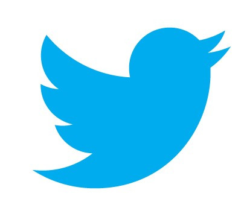
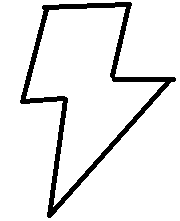
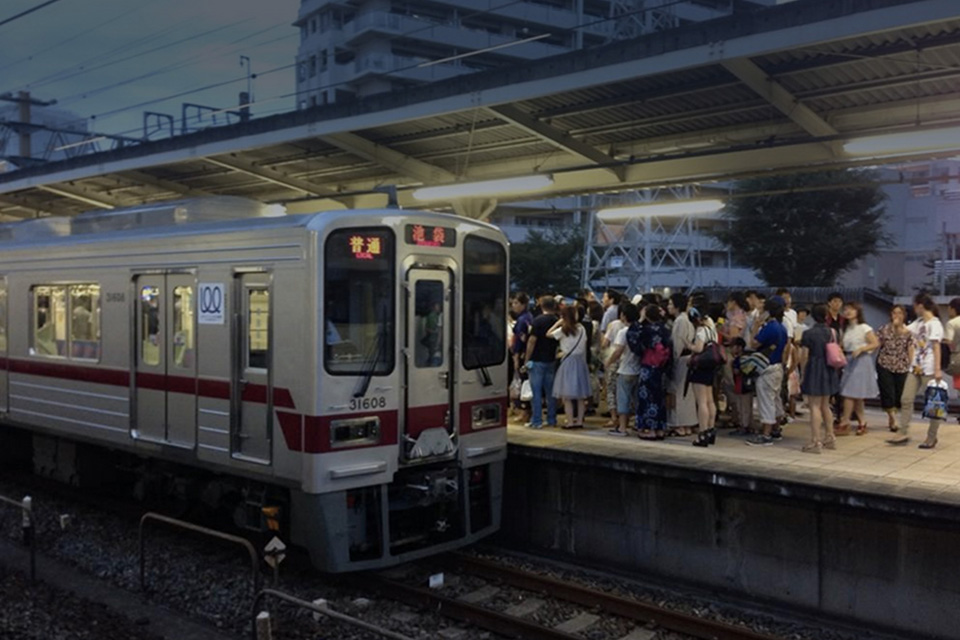
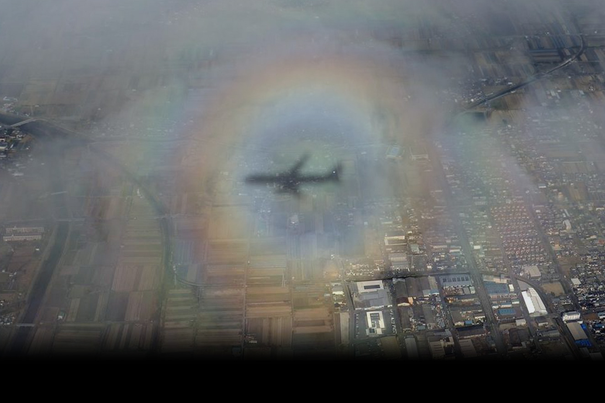

主页 
瞬间
语言：简体中文


欢迎使用 Twitter。
记住我
·
忘记密码?
登录
联系你的好友和更多精彩。获取你感兴趣的实时
更新。并通过每个视角观看事件实时呈现。
新来 Twitter? 注册
注册Twitter
关于
帮助中心
博客
状态
工作机会
条款
隐私政策
Cookies
广告信息
商标
广告
市场营销
企业
开发者
目录
设置
© 2017 Twitter
今日の羽田→伊丹便、大阪への降下中に現れた虹のリング。太
陽を背にした飛行機の周囲に光が拡散され、雲の上で虹のよう
に見える「ブロッケン現象」です。実際に見て撮影に成功した
のは初めてで、夜になった今も興奮が冷めません。